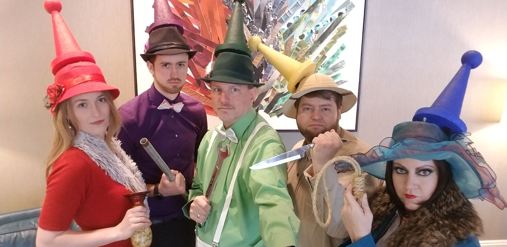
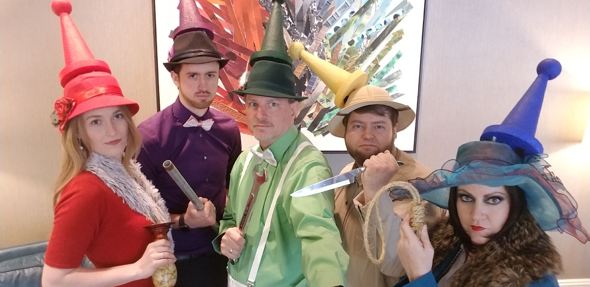

After recently becoming an empty nester, I decided to take on a
whole new role in life. I spent twenty one years working part time
as an office manager while my children were in school. Now I am
looking for a career that I will find fulfilling as a web developer.
As a coding boot camp student at SMU, I am grateful for this chance
to learn new technology and face new challenges and adventures. In
class I am learning the basics of HTML, CSS and JavaScript. Adding
this knowledge to the skills I learned raising three children and
running an office, to be task oriented and excellent at time
management, will make me a valuable employee to any company. I am
excited for the opportunity to take the skills I have been taught
and apply them.
On a personal note, entertaining and being creative are my favorite
pass times. An example of this passion is the Live Clue game I
created using my entire home for the game board. In addition I love
pugs, Italy, swing dancing, escape rooms, meeting new people and
solving a good mystery.
To view my resume, click on this link.
Resume


 


To view the website, click on the link below.
Student Bio
To view the website, click on the link below.
Refactored Website
To view this video game, click the link below.
Catch The Burglar
I look forward to connecting with you.
Please reach out to me.
- Phone: (469) 358-0710
- Email: Michelle
- Linkedin: MichelleBerta
- Github: MichelleBerta